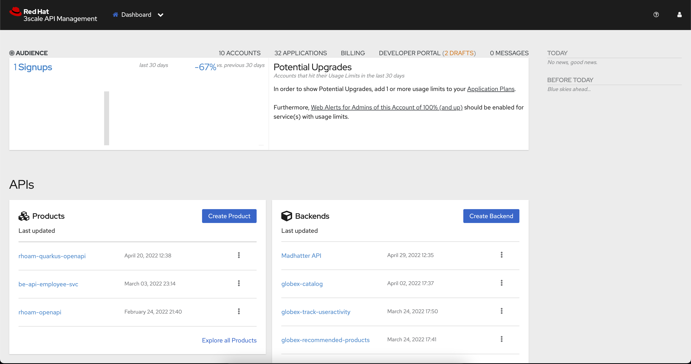
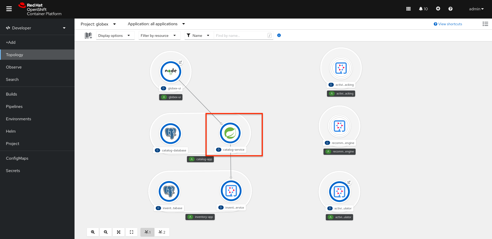

Adding API Management capabilities to an application
Introduction
To support the business requirement of managing and securing access to the services, Red Hat® OpenShift API Management (RHOAM) will be used as the API management platform.
RHOAM is a hosted and managed API management service delivered as an add-on product to Red Hat OpenShift Dedicated, a fully managed service of enterprise Kubernetes platform Red Hat OpenShift, and also on Red Hat OpenShift Service on AWS (ROSA)
Activities
In this part of the workshop you will:
-
Setup a RHOAM sandbox environment
-
Manage and secure the already deployed Product catalog service.
Environment and prerequisites
The Product catalog API is already deployed on the OpenShift cluster in the namespace you’ve been using for this portion of the workshop. You will use the Red Hat OpenShift API management sandbox to manage this API. All activities in this part of the workshop can be done in the RHOAMsandbox console and do not require any tools to be installed on your workstation.
Prerequisites:
-
A Red Hat Account
Step-By-Step Instructions
Signup and launch Red Hat OpenShift API Management sandbox
Register for a RHOAM sandbox by clicking on the red button in the user activities page - TBC
You will be asked to confirm the request through an email sent to your inbox. Once you launch the sandbox, follow these steps to setup an RHOAM sandbox tenant
-
From the Projects dropdown on the top of the page, set the project namespace as <username>-dev from the projects that have been already created for you.
-
Click on Search from the left navigation
-
Click on Resources to search for
APIManagementTenantand select it. -
Select Create APIManagementTenant button
-
You will be taken to the YAML configuration of this resource. Click the Create button at the bottom of the YAML displayed.
-
You will be taken to the Details page of this resource. Click on the YAML tab to view the changes to the YAML configuration.
-
Watch for changes to the YAML of the APIManagementTenant resource, and wait for the status to be displayed at the bottom of the YAML to become
status.provisioningStatus: 3scale account ready -
The API Management Tenant account is now provisioned and is ready for use. This may take a couple of minutes
-
To access OpenShift API Management, navigate to the Launcher pane on the right side, select
API Management -
Choose to authenticate using Red Hat Single Sign-On, and login using the identity provider that applies to you, e.g DevSandbox.
Configure and manage your API
The following sections will guide you through
-
creating a Product
-
creating a Backend
-
Defining Method, Metrics and Mapping rules
-
Creating an application plans
-
Creating applications for the default account
Create an API Product
A product is a customer-facing API that packages one or more backends. You will create an API Product manually with the following instructions
-
In a browser window navigate to the Red Hat OpenShift API Management
-
In the Dashboard, under the APIs section, click Create Product in the Products card.
 -
Provide the following details:
-
Name:
globex-product-catalog -
System name:
globex-product -
Description:
Optional field containing more details about the product.
-
-
Click Create Product.
-
A Product
globex-product-catalogis created and you are taken to the Product Overview page
Create an API Backend
The next step is to create a Backend which for the Product Catalogue API which you will then add to the Product you’ve created in the previous step
-
Go to the Dashboard.
-
Under the APIs section, click Create Backend in the Backends card.
-
Provide the following details:
-
Name:
globex-catalog. -
System name:
globex-catalog. -
Description:
Optional field containing more details about the backend. -
Private endpoint: Base URL of the Product Catalog API.
Here are instruction how to access the Private Endpoint of the Product Catalog API.
-
Access the Developer Perspective Topology of the OpenShift enviroment where the Globex application has been deployed
-
Click on the catalog-service icon and you will see the deployment details popup on the right hand side
-
Copy the Location as present at the bottom of this under Routes. This would look something like this
https://catalog-globex-recommendation.apps.cluster-pppk8.pppk8.sandbox45.opentlc.com:443
-
-
-
Click Create Backend.
Define Method, Metrics and Mapping rules
Setup a new Method
-
Navigate to the Product > globex-catalog > Integration > Methods & Metrics
-
Click New method
-
Provide the following details:
-
Friendly name:
getPaginatedProductsList -
System name:
getPaginatedProductsList
-
-
Click Create Method
Setup a new Metric
-
Navigate to the Product > globex-catalog > Integration > Methods & Metrics
-
Click New metric
-
Provide the following details:
-
Friendly name:
Hits -
System name:
hits -
Unit:
hit -
Description:
Number of API hits
-
-
Click Create Metric
Setup a new Mapping Rule
-
Navigate to the Product > globex-catalog > Integration > Mapping Rules
-
Click Create Mapping Rule
-
Provide the following details:
-
Verb:
GET -
Pattern:
/services/products -
Metric or Method to increment: Choose
getPaginatedProductsList -
Increment by:
1 -
Check the checkbox Last
-
Position: 0
-
-
Click Create Mapping Rule
Create an application plans to define a customer-facing API product
-
Go to the Dashboard
-
Under the API section, click on
globex-product-catalogunder the Product -
In Applications > Application Plans menu on the left hand side, click on Create Application Plan
-
Provide the following details:
-
Name:
globex-app-plan -
System name:
globex-app-plan
-
-
Click Create Application Plan.
Create applications for the default account
An application is always associated with an application plan. Applications are stored within developer accounts. In basic 3scale plans only a single application is allowed. In enterprise plans, multiple applications per account are allowed.
-
Navigate to Audience > Accounts > Listing.
-
Click Create to create a new Developer account.
-
Provide the following details:
-
Username:
globex-dev -
Email: enter an email address
-
Password: enter a password
-
Organization/Group Name:
Globex
-
-
Click Create
-
Go to the Application tab of this account through the navigation on the top of the page.
-
Click Create Application.
-
Choose the following details:
-
Product:
globex-catalog -
Application plan:
globex-app-plan -
Name:
globex-application -
Description: a suitable description
-
-
Click Create Application.
-
You can see your new application in Dashboard > Audience > Accounts > Applications > Listing
Testing the Globex Coolstuff application
Sending requests to your product to test the integration of a backend
-
Navigate to the Product > globex-catalog > Integration > Settings
-
Under AUTHENTICATION section, change the following
-
API KEY (USER_KEY) BASICS > Auth user key:
api_key -
CREDENTIALS LOCATION: Choose
As HTTP Headers
-
-
Next, to promote the new APIcast configuration to staging, navigate to the Products>
globex-product-catalog> Integration > Configuration. -
You will see the Mapping Rules, Credential Location and the Backend
-
Under APIcast Configuration, click Promote to Staging APIcast.
-
Under Staging APIcast, promote the APIcast configuration to production by clicking Promote to Production APIcast.
-
To test requests to your API product, copy the command provided in Example curl for testing and run it in a terminal.
-
After you run the command, you should get a response containing results from Catalog API.
-